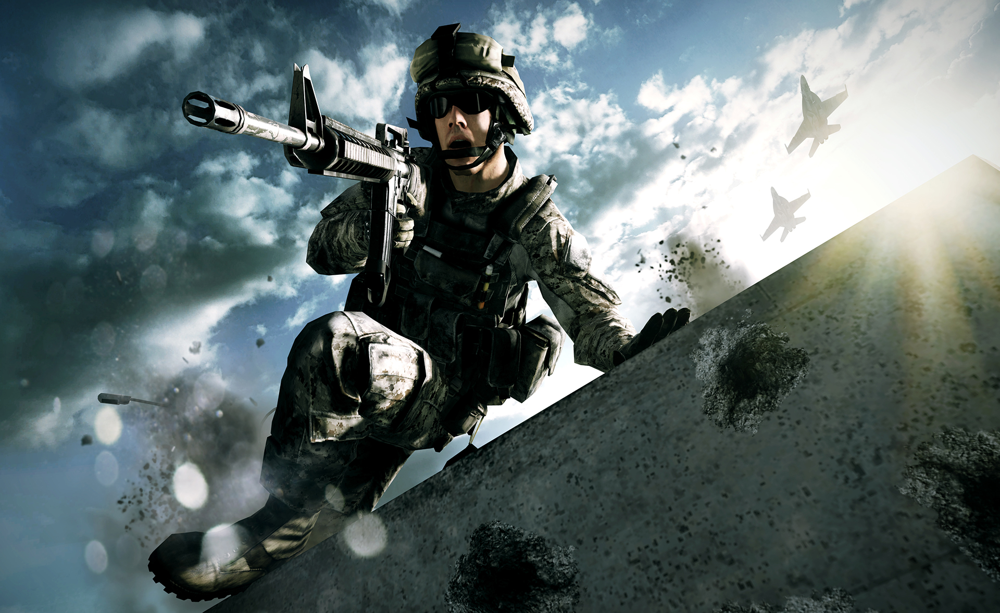
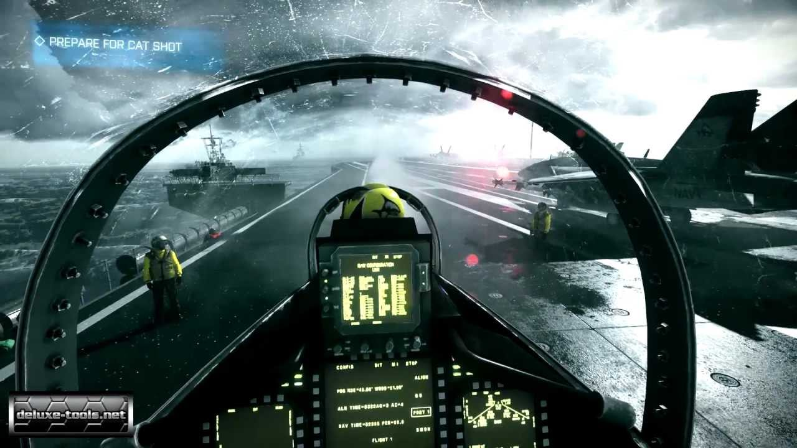

De Battlefield-serie is terug van weggeweest. Met Battlefield 3 is eindelijk de grootschalige oorlogvoering terug. Deze keer kan alles in de omgeving kapot, zijn alle voertuigen te beklimmen, wapens te gebruiken en heb je genoeg online en computergestuurde vijanden om je kogels op af te vuren!
Het verhaal van Battlefield 3 neemt de speler mee naar het Iraanse Teheran, naar Sulaymaniyah in Kurdistan te Irak, naar Parijs en naar New York. Strijd wordt overal gevoerd en dat laten de makers van Battlefield 3 duidelijk zien. Het verhaal hoef je niet in je eentje te doorlopen, maar dit kan ook via het internet samen met een vriend.
Battlefield 3 draait om de authentieke ervaring van oorlog. Daarom heeft het bedrijf achter de game de moeite genomen om het mogelijk te maken alles kapot te maken. Bovendien heeft het alle geluiden uit de game zelf opgenomen. Zo klinkt een tank op afstand anders dan van dichtbij, en daar hebben de makers dan ook rekening mee gehouden. Recensie(s)
De Battlefield-serie draait om episch grote online veldslagen. Met 63 medespelers door een gigantische map rauzen, vijandelijke bases platbombarderen met een jachtbommenwerper en samen met je squad bikkelen om controlepunten in handen te krijgen. Bij Battlefield 3 is dit niet anders, al heeft ontwikkelaar DICE deze keer ook zijn pijlers gericht op een singleplayer. In vrijgegeven gameplaybeelden zagen we kapotgeschoten stadscentra, waar het zonlicht door scheuren in muren priemde en waren we getuige van een hele tankdivisie die door een uitgestrekte woestijn scheurde. Het is een onderdeel van de game waar niet om heen kunnen, maar Battlefield 3 laat zich toch vooral zien met zijn geniale multiplayer. Deze is namelijk ontzettend uitgebreid. Het ene moment voer je in Conquest een grootschalige oorlog tussen gigantische heuvels in het Kaspische grensgebied en probeer je met 31 teamgenoten controlepunten af te pakken van het even zo grote vijandelijke leger. Even later begeef je je in de Rush-modus door nauwe Parijse straten en zet je alles op alles om vijandelijke computerterminals aan gruzelementen te blazen (of de tegenstander hiervan te weerhouden). Elk potje is weer anders, door het verschil in de stuk voor stuk interessante locaties, de doelen binnen het level, maar vooral door de unieke speelwijze van elke speler en de noodzaak dan wel bereidheid om goed samen te werken.
Doordat iedere speler een andere focus heeft, blijft de game erg goed in balans. Een tankspecialist moet erg op zijn hoede zijn voor pantserdoorborende munitie van de doorgewinterde Engineer, die op zijn beurt moet opletten voor de topvliegenier in zijn gevechtshelikopter. Welke speelstijl je ook kiest, je hebt altijd je zwakke en sterke punten, waarop je tegenstanders vervolgens moeten inspelen. Dit zorgt voor een heel erg leuke dynamiek in de multiplayer.
Waar er op de multiplayer nog weinig valt aan te merken, daar laat de singleplayer wel een aantal behoorlijke steken vallen. Deze modus werd van te voren flink gehyped en kreeg ook volop aandacht in de marketingcampagne rondom het spel. In dat licht valt hij op sommige punten wat tegen. Zo worden er direct in de eerste missie al wat geforceerde actiemomenten op je afgegooid, waarbij er plotseling een terrorist om een hoekje staat te wachten of je van metrostel naar metrostel moet springen, alvorens één van de wagons ontspoort en explodeert. Battlelog & Origin De PC-versie van Battlefield 3 moet worden opgestart via Battlelog in je webbrowser. In Battlelog kun je de singleplayer en multiplayer starten, maar wordt ook je voortgang bijgehouden. Je kunt bijvoorbeeld kinderlijk eenvoudig zien hoeveel ervaringspunten je nog nodig hebt voordat je zo'n felbegeerde upgrade krijgt voor je snipergeweer. Ook fungeert Battlelog als een sociaal platform, waar je vrienden kunt maken, kunt reageren op elkaars voortgang en waar je een peloton kunt oprichten om met een grote groep online de strijd aan te binden.
Daarnaast loopt de game via Origin. Gebruik daarvoor de nieuwste versie en laat de versie die wordt meegeleverd links liggen. Het downloaden van Origin kan via Origin.com Bij deze actiemomenten ontbreekt het helaas aan impact en ze komen daardoor meer dan eens knullig over. Niet in de laatste plaats omdat je ze moet afwerken middels quick time-events. Gedurende heel het singleplayeravontuur, bij elke geforceerd stukje actie, verwacht de game dat je lukraak op de spatiebalk ramt of je rechtermuisknop indrukt om een actie uit te voeren. Het voelt misplaatst, vooral omdat dit soort houtje-touwtje actie nergens memorabel wordt.
De singleplayer is vele malen beter op de momenten dat het realistische oorlogsvoering benadert. Wanneer je de straten van Teheran schoonveegt van de terroristische boevenbende, in de Kaspische grensstreek oog in oog komt te staan met honderden Russische parachutisten of in een tweezits straaljager plaatsneemt om het Iranese luchtruim te ontdoen van vijandelijke vliegtuigen. Dit zijn de momenten dat je echt kunt genieten van alle pracht en praal die de game biedt. Van neerstortende gebouwen en het zonlicht dat op fenomenaal mooie wijze in je cockpit schijnt. Van uiterst gedetailleerde omgevingen en tegenstanders en bovenal van het prachtige geluid dat het afschieten van kogels met zich meebrengt. Op deze momenten, in de totale hel waarbij je munitie om je horen hoort suizen, laat de krachtige Frostbite 2-engine zijn spierballen zien en waan je je in een waar oorlogsgebied. De geforceerde actiemomenten die samenhangen met het dertien in een dozijn-verhaal vol Russen, nucleaire wapens en een terroristisch plot tegen de vrije wereld doen daar alleen maar afbreuk aan.
Van de zes uur die je spendeert aan de singleplayer, ben je een te groot deel kwijt aan dit soort nonsens. Gelukkig weten de momenten van realistischere oorlogsvoering het geheel toch nog staande te houden, waardoor je in die zes uur nog meer dan genoeg plezier kunt beleven. De singleplayer als geheel is dan ook zeker niet slecht, maar het is ook niet fantastisch te noemen. Voor die fantastische en memorabele momenten zal je toch echt je heil moeten zoeken in de multiplayer, die tot de beste van dit moment behoort.
Bekijk ook:VoorspelDagboekVliegend materieelRijdend materieelScreenshotsVideosConclusie: Ondanks de vergrote focus op het singleplayeravontuur, levert Battlefield 3 wat de Battlefield-serie altijd geleverd heeft: een fantastische, gebalanceerde en uitgebreide multiplayer. De grootschalige oorlog en vernietiging in de Conquest-modus, het snelle tactische verloop van de Rush-varianten en de spectaculaire Deathmatch-modi zorgen voor genoeg content om jarenlang zoet mee te zijn. De zes uur durende singleplayer is als geheel prima, maar laat het afweten wanneer er geforceerde actiemomenten voor je voeten worden gegooid. Juist op de momenten dat de oorlogsvoering realistischer is, komt de singleplayer veel beter uit de verf en kun je naar hartenlust genieten van de prachtige beelden en ongekend sterke geluid.